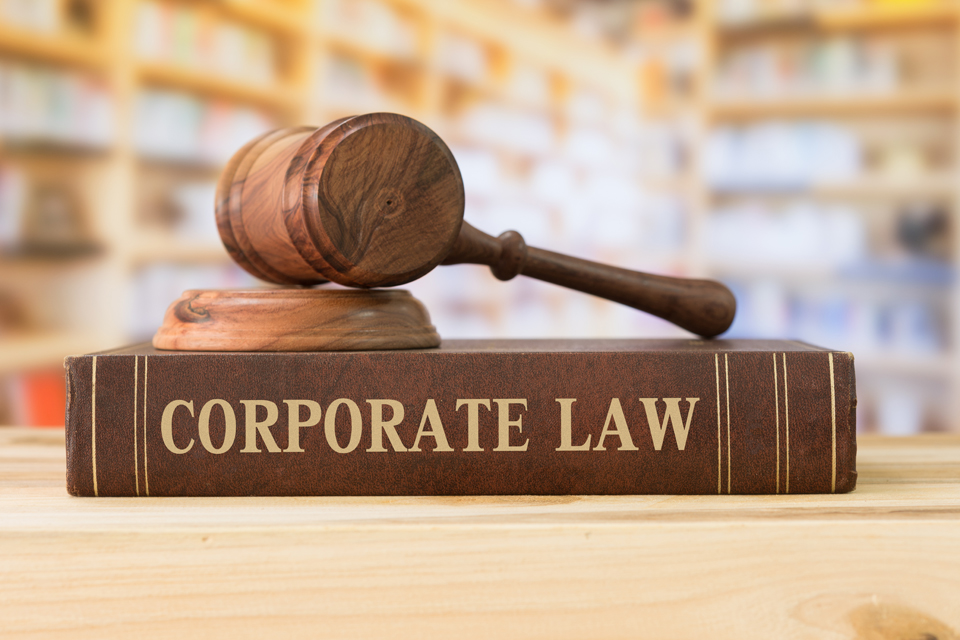
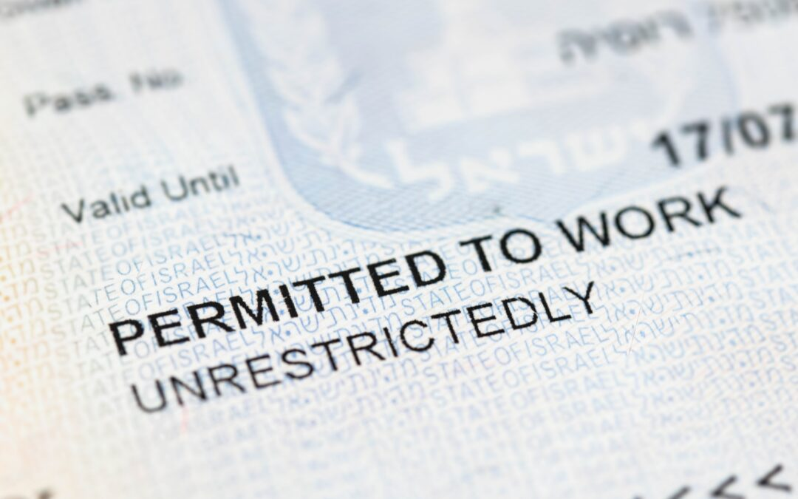

Specialties
In New York, the practice of law is vast and varied, with lawyers specializing in different areas to meet the diverse needs of clients. A typical day for a lawyer in one of these specialties can look quite different depending on their focus, but all are united by a common goal: to provide expert legal advice and representation.
“When you are backed up against the wall, break the goddam wall” -Harvey Spector (Suits)
Corporate

For a corporate lawyer, the day often starts early with reviewing contracts, negotiating mergers, or advising businesses on compliance with state and federal regulations. Corporate lawyers in New York work closely with large companies, ensuring that business transactions are legally sound, helping with corporate governance, and resolving issues like intellectual property disputes. Their work is fast-paced, especially in a city like New York, where business deals and financial transactions happen constantly.
Criminal Defense
A criminal defense attorney might begin the day preparing for a trial, meeting with clients who are facing serious charges, or reviewing case files for new developments. In New York, where the criminal justice system is particularly active, defense attorneys play a key role in safeguarding their clients' rights, whether they are defending against allegations of theft, assault, or more serious felonies. Their work requires a keen understanding of both the law and human behavior, as they navigate the complexities of criminal procedure and work to get the best possible outcome for their clients.
Injury
A personal injury lawyer might spend their day speaking with accident victims, reviewing medical records, and preparing for negotiations with insurance companies. In a city like New York, where accidents happen every day, personal injury lawyers play a crucial role in helping individuals who’ve been injured due to accidents, medical malpractice, or unsafe conditions. These lawyers often work on a contingency basis, meaning they only get paid if they win the case, which adds an element of urgency and dedication to their work.
Family
For a family lawyer, a typical day could involve meeting with clients to discuss divorce proceedings, child custody battles, or issues surrounding child support. Family law in New York covers a range of emotional and complex issues, and family lawyers are trained to mediate sensitive situations and represent clients in both family court and during settlement negotiations. These attorneys must balance legal expertise with empathy, as the matters they deal with often affect their clients' personal lives deeply.
Real Estate

Real estate attorneys in New York, where the property market is notoriously fast-moving, spend their days drafting and reviewing contracts, negotiating property deals, and advising clients on zoning laws and landlord-tenant disputes. With the city’s high demand for residential and commercial real estate, these lawyers are in high demand, helping clients navigate the legal complexities of buying, selling, or renting property in one of the most competitive markets in the world.
Immigration

Immigration lawyers in New York are busy helping clients navigate the complexities of U.S. immigration law. From applying for work visas to helping individuals gain permanent residency or citizenship, immigration lawyers assist people from all over the world who are seeking a better life in the U.S. Their work can be emotionally rewarding but also demanding, as they deal with time-sensitive applications and must stay on top of ever-changing immigration policies.
IP
Intellectual property (IP) lawyers in New York often work with innovators, artists, and businesses to protect their creations. Whether it's a startup looking to patent a new technology, a musician trying to protect their music, or a designer who needs to safeguard their trademark, IP lawyers play a critical role in ensuring that their clients' intellectual property rights are upheld. These lawyers are often at the cutting edge of technology and creative industries, advising clients on how to protect their most valuable assets.
Environmental
For those in environmental law, a day can be spent working on cases related to land use, pollution, or natural resource conservation. Environmental lawyers in New York might advise companies on complying with state and federal environmental regulations, or they might represent communities facing environmental hazards like toxic waste or air pollution. Given New York's role as both a major urban center and a hub for industries that impact the environment, these lawyers are key players in balancing economic growth with environmental protection.
Summary
Each of these specialties requires a unique set of skills and expertise, and the daily routine can be as diverse as the people and issues they represent. In a city as dynamic as New York, the legal landscape is constantly shifting, and lawyers are on the frontlines, navigating the complexities of both the law and the city itself. Whether negotiating high-stakes business deals, defending a client in a criminal trial, or protecting someone's personal rights, lawyers in New York play a vital role in shaping the legal framework that supports the city's growth and prosperity.